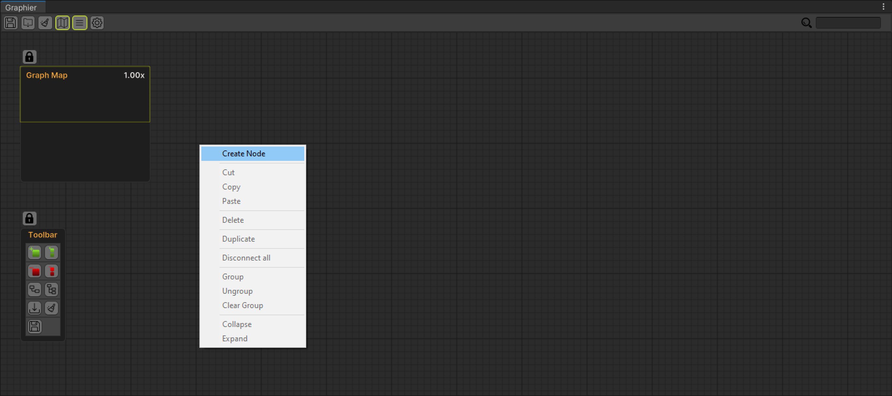
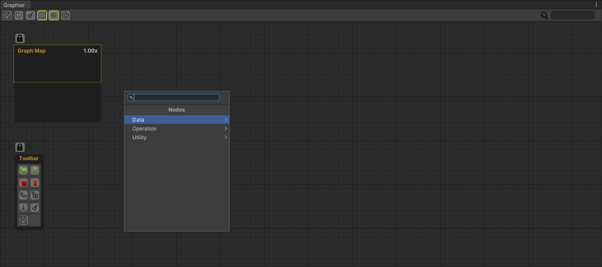
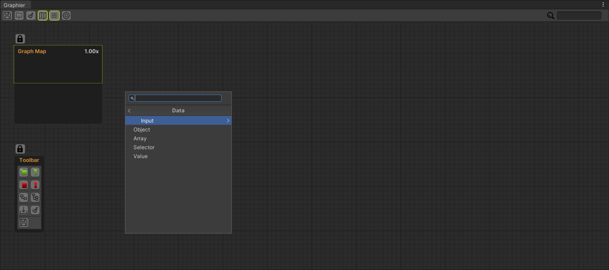
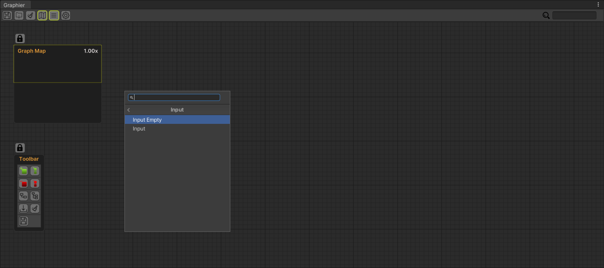
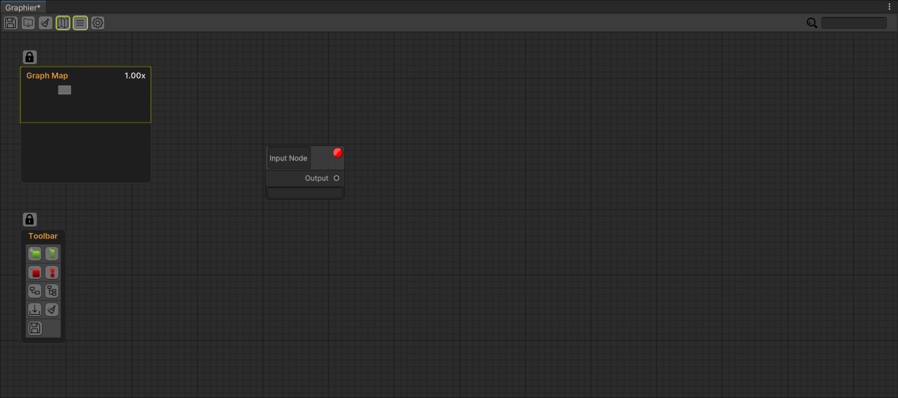
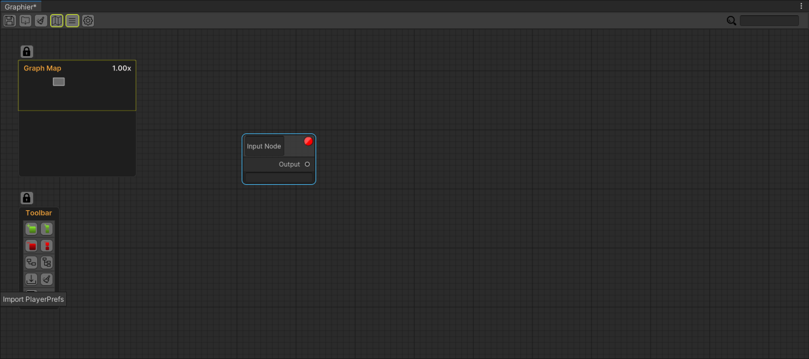
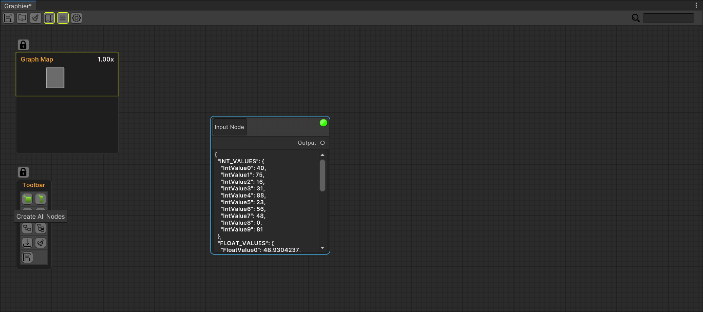
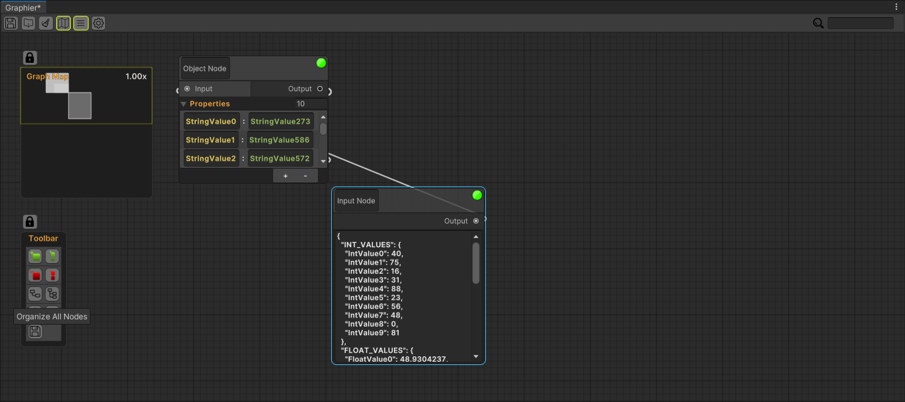
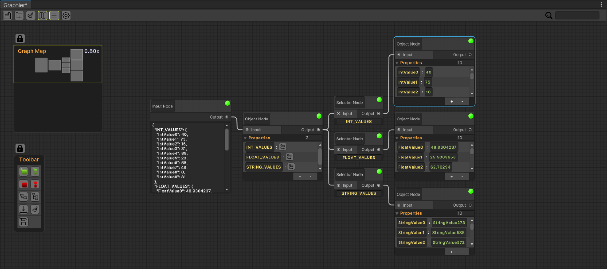
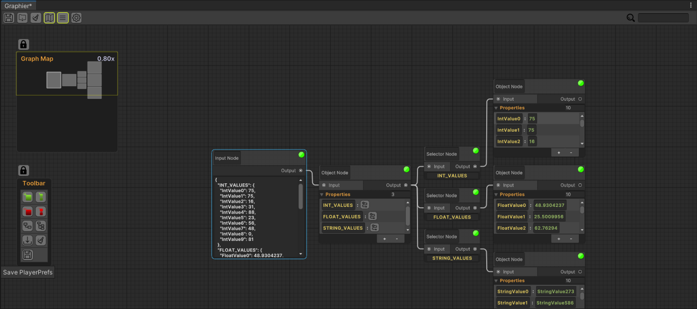

✔️ Creating Player Prefs Example Graph
First open the Contextual Menu by right clicking on an empty spot in the graph.
And from there open the search window by clicking on the Create Node tab.

After the Search Window opens, click on the Data tab to open the nodes in the data tab.

Then open input nodes by pressing the Input tab.

In this tab you can create an empty Input or an Input node containing a sample json data.
Go ahead and create an empty Input Node.

Our empty Input Node has been created, now let's fill it.

Now select the empty input node we created and press the Import PlayerPrefs button from the Node Toolbar.

All values created in PlayerPrefs are passed into Input Node.
Then select the Input Node we created and press the Create All Nodes button in the Node Toolbar.

All nodes and property fields in our data have been created, now it's time to organize them.
Select the Input Node we created again and press the Organize All Nodes button in the Node Toolbar.

Now we have created and organized data.

You can make the changes you want on the data, then select the Input Node and save all values to PlayerPrefs again by pressing the Save PlayerPrefs button in the Node Toolbar.
